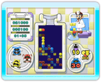

7 |
Willkommen! |
 |
Dr. Mario & Bazillenjagd beinhaltet zwei separate Spiele: Dr. Mario und Bazillenjagd. Beide haben das gleiche Spielziel und folgen den gleichen Regeln, doch sie unterscheiden sich in der Steuerung.

● Was ist Dr. Mario? Das Spielziel von Dr. Mario ist die Eliminierung der Viren mithilfe der Vitaminkapseln. Gelingt es dir, mit vier oder mehr gleichfarbigen Elementen eine vertikale oder horizontale Reihe zu bilden, so verschwindet die ganze Reihe. Diese Elemente können Kapselteile oder Viren sein; wichtig ist allein, dass es sich um mindestens vier Stück handelt. Halte die Wii-Fernbedienung waagerecht und verwende die Knöpfe, um Dr. Mario zu spielen. ● Was ist Bazillenjagd? Das Ziel von Bazillenjagd ist mit dem von Dr. Mario identisch: Eliminiere die Viren mithilfe der Kapseln! Bei diesem Spiel zeigst du mit der Wii-Fernbedienung auf den Bildschirm und verwendest den Zeiger zum Spielen. Bis zu vier Spieler können gleichzeitig spielen. ● Kampf-Modus In Dr. Mario kannst du direkt gegen einen Freund spielen, oder du verwendest die Nintendo Wi-Fi Connection, um dich mit Spielern auf der ganzen Welt zu messen. Du kannst sogar Spieler herausfordern, die das Spiel gar nicht erworben haben, indem du deinen Wii-Freunden via WiiConnect24 die Dr. Mario Demo zusendest. |
 |
 |
 |